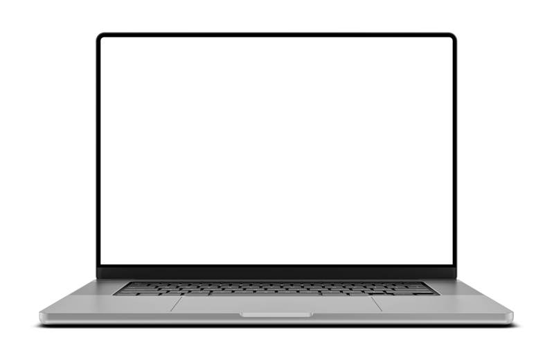
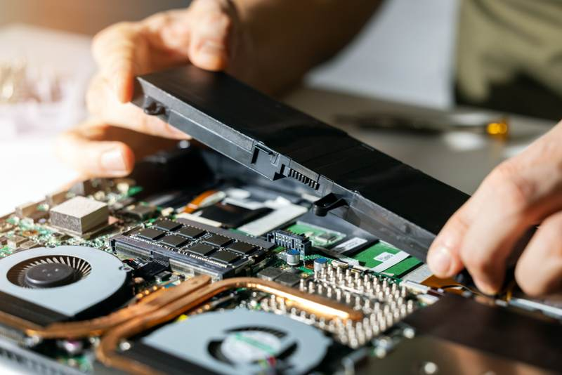

Understanding Laptop Performance Issues
In today's digital age, laptops have become indispensable tools for both personal and professional use. However, like any piece of technology, they can sometimes experience performance issues. Before rushing to a technician, there are several basic troubleshooting steps you can perform at home that might resolve the issue. This guide will walk you through some common problems and their DIY solutions.
One of the most frequent complaints is a laptop running slowly. This can often be attributed to too many background applications or insufficient RAM. To troubleshoot, try closing unnecessary programs and consider upgrading your RAM if the problem persists.
Resolving Connectivity Issues
Another common problem is connectivity issues, whether it's with Wi-Fi or Bluetooth. If your laptop won't connect to the internet, start by ensuring that your router is working properly and within range. Restarting both your router and laptop can sometimes resolve these connectivity problems.
For Bluetooth issues, make sure your laptop's Bluetooth is enabled and the device you're trying to connect to is in pairing mode. If the problem continues, updating your drivers might be necessary.
Dealing with Display Problems
Display problems can range from a blank screen to flickering or distorted images. Start by checking the brightness settings and ensuring the display is not accidentally set to an external monitor mode. If the screen is blank, try connecting your laptop to an external monitor to determine if the issue is with the display or the graphics card.

If you're experiencing screen flickering, updating your graphics driver or adjusting the refresh rate in the display settings may solve the problem.
Troubleshooting Battery Issues
If your laptop battery isn't holding a charge or drains quickly, there are a few things you can check. First, ensure that your power settings are optimized for battery life rather than performance. Also, inspect the battery health through your laptop's settings or a third-party app.
Consider calibrating your battery by fully charging it, then letting it discharge completely before charging it again. If issues persist, it might be time for a replacement battery.

Addressing Overheating Problems
Laptops can overheat due to dust build-up in the vents or an overworked CPU. Regularly cleaning the vents with compressed air can help maintain proper airflow. Additionally, using a cooling pad can assist in keeping temperatures down during intensive tasks.
If overheating continues to be an issue, check the task manager for any processes that are using too much CPU power and close them if they're unnecessary.
Conclusion
Troubleshooting common laptop issues at home can save you both time and money. By understanding these basic steps, you can often resolve performance, connectivity, display, battery, and overheating issues without professional help. However, if problems persist despite these efforts, consulting a technician might be necessary to prevent further damage.